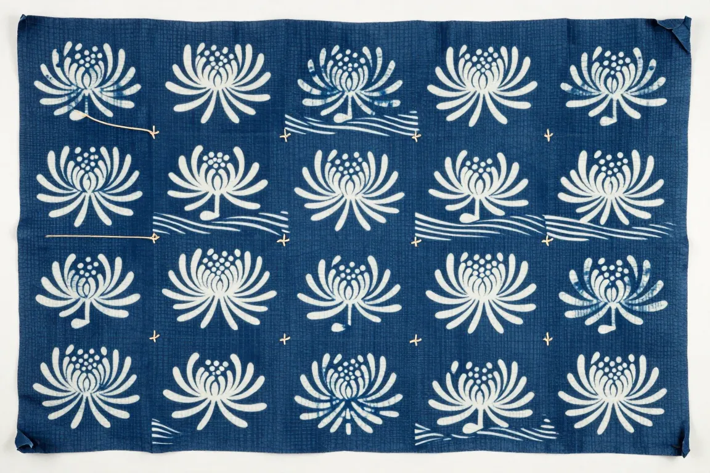

Трафарет вырезают в слоях бумаги из тутовника, и сквозь него на ткань наносят резервирующую рисовую пасту. Затем ткань красят. Получается повторяющийся узор с резкими белыми краями и плоским цветом.

Главная идея
Узор, один раз вырезанный в бумаге, можно напечатать тысячу раз как резкую белую форму на крашеной ткани, если трафарет держит свои островки тонкими перемычками.
Принципы дизайна
Вырезайте узор в 2–3 слоях васи, склеенных танином хурмы (какисибу), чтобы трафарет оставался жёстким и влагостойким.
Держите каждую линию реза шириной 0,1–0,5 мм и оставляйте между двумя разрезами не меньше 0,5 мм бумаги.
Держите каждый свободный островок бумаги тонкой перемычкой, связкой или сеткой из шёлковой нити между слоями.
Наносите резервирующую рисовую пасту через трафарет одним проходом шпателя и дайте ей высохнуть перед крашением.
Красьте ткань после высыхания резерва. Резерв остаётся белым, а краситель заливает остальное плоским цветом.
Повторяйте узор на ткани и стыкуйте каждый раппорт так, чтобы шов не был виден.
Выбирайте мелкий тонкий мотив: волну, растение, герб, птицу. Сюжетную сцену допускайте только в работах мингэй.